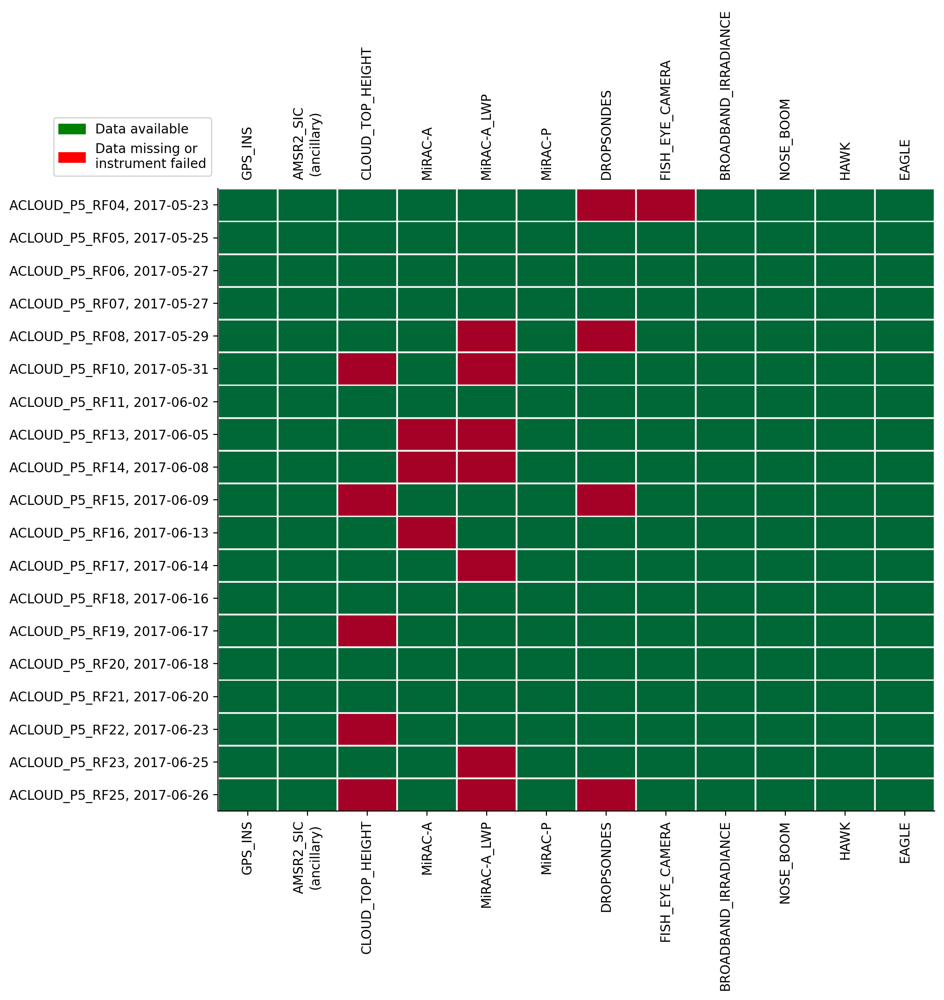
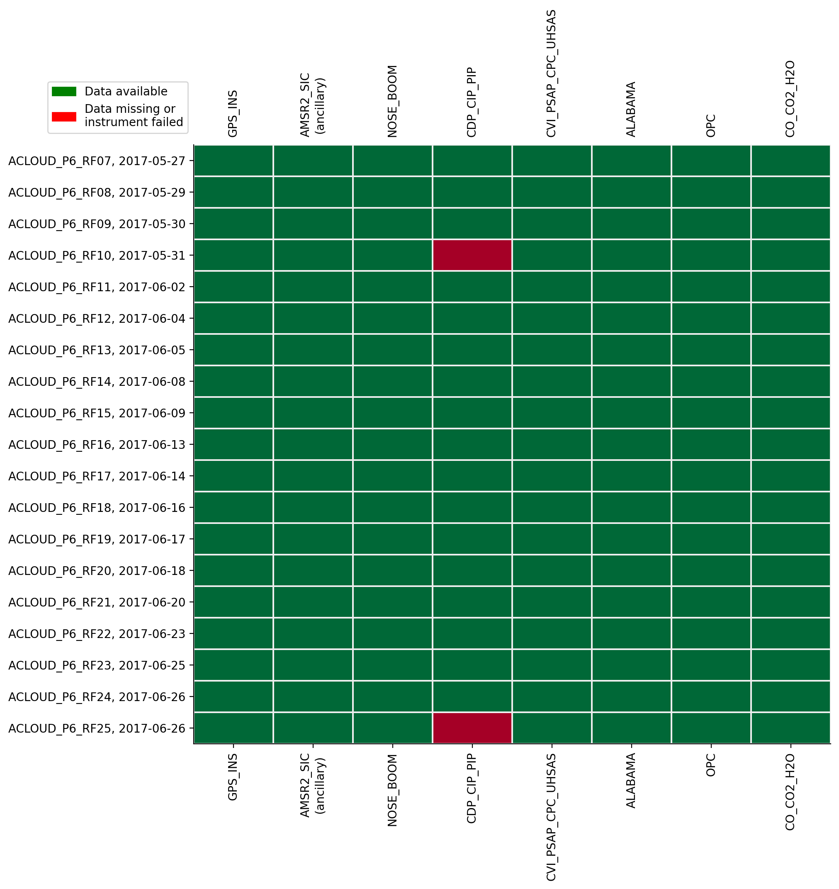
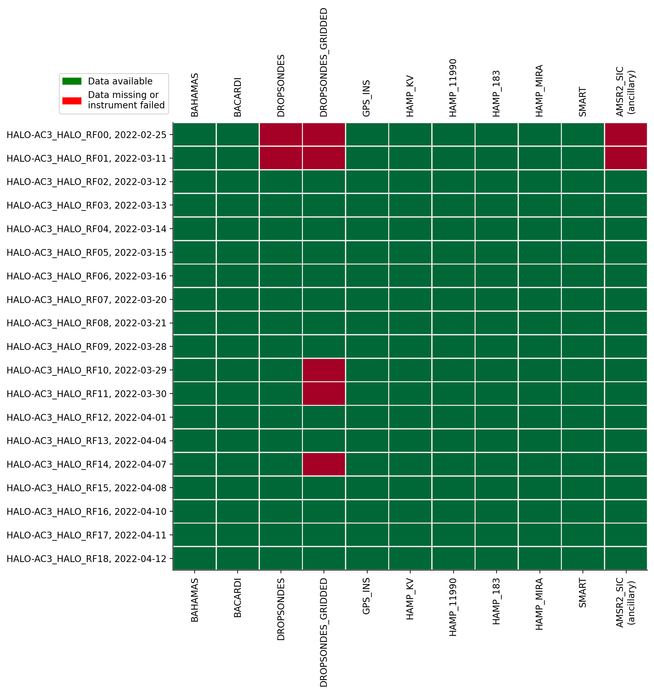
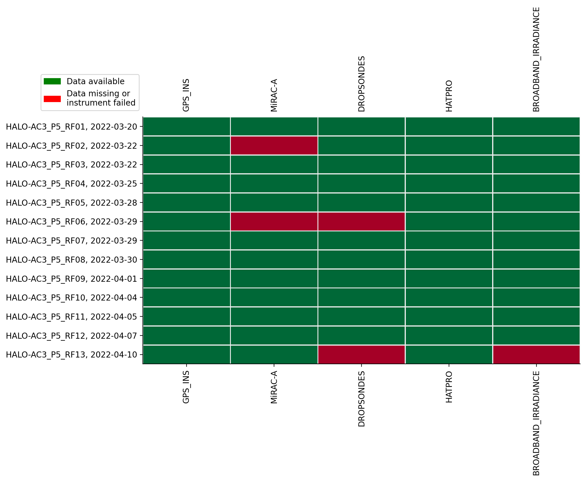
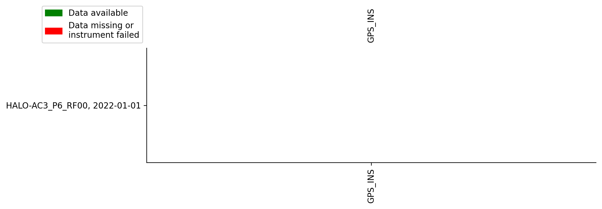

Datasets
Contents
Datasets#
During the campaigns different instruments have been operated on various platforms in the framework of (AC)3. As platforms the Polar 5 and Polar 6 aircraft of the Alfred-Wegener-Institute for Polar- and Marine research and the HALO aircraft operated by the DLR have been used. More information on the aircaft can be found on HALO-AC3.
The overview below shows the datasets available via the intake catalog for each research flight.
%matplotlib inline
import ac3airborne
import matplotlib.pyplot as plt
import matplotlib.patches as mpatches
import numpy as np
plt.style.use("mplstyle/book")
# load intake catalog and flight segments
cat = ac3airborne.get_intake_catalog()
meta = ac3airborne.get_flight_segments()
ancillary = ['AMSR2_SIC']
def data_availability(mission, platform):
"""
Plot data availability matrix
"""
# store data availability in a matrix
data_availability = np.zeros(shape=(len(list(cat[mission][platform])),
len(list(meta[mission][platform]))))
for i, dataset in enumerate(list(cat[mission][platform])):
data_availability[i, :] = np.isin(list(meta[mission][platform]),
list(cat[mission][platform][dataset]))
# plot data availability
yscale = data_availability.shape[1]
fig, ax = plt.subplots(1, 1, figsize=(10, 3+0.4*yscale))
ax.pcolormesh(range(data_availability.shape[0]),
range(data_availability.shape[1]),
data_availability.T,
shading='nearest',
vmin=0,
vmax=1,
cmap='RdYlGn',
edgecolors='#eeeeee')
ax.set_xticks(range(data_availability.shape[0]))
ax.set_yticks(range(data_availability.shape[1]))
xlabels = []
for ds_name in list(cat[mission][platform]):
if ds_name in ancillary:
ds_name += '\n(ancillary)'
xlabels.append(ds_name)
ax.set_xticklabels(xlabels, rotation=90)
y_labels = [flight_id+', '+flight['date'].strftime('%Y-%m-%d')
for flight_id, flight in meta[mission][platform].items()]
ax.set_yticklabels(y_labels)
ax.tick_params(labeltop=True)
ax.invert_yaxis()
available = mpatches.Patch(color='green', label='Data available')
not_flown = mpatches.Patch(color='red', label='Data missing or\ninstrument failed')
ax.legend(handles=[available, not_flown], ncol=1,
bbox_to_anchor=(0, 1.01), loc='lower right')
plt.show()
ACLOUD#
P5#
data_availability(mission='ACLOUD', platform='P5')

P6#
data_availability(mission='ACLOUD', platform='P6')

HALO-AC3#
HALO#
data_availability(mission='HALO-AC3', platform='HALO')

P5#
data_availability(mission='HALO-AC3', platform='P5')

P6#
data_availability(mission='HALO-AC3', platform='P6')
